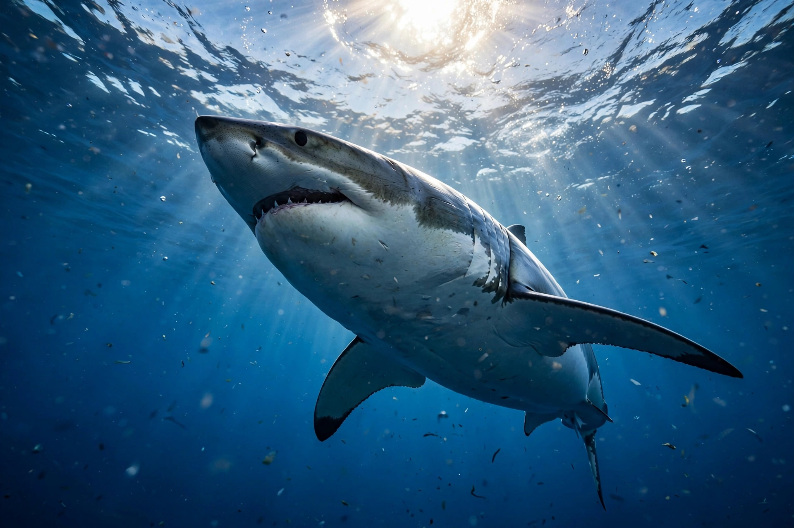

Shark

[Image: a great white shark swimming in blue water, viewed from below against the surface light]Sharks are a group of cartilaginous fish characterised by a skeleton of cartilage, five to seven gill slits, and replaceable rows of teeth. They have patrolled the oceans for over 400 million years — older than trees — evolving into more than 500 species from the 20-cm lanternshark to the whale shark, the largest fish alive at up to about 12–18 metres.
As apex and mesopredators, sharks structure marine ecosystems; their senses are famously acute, including electroreception through the ampullae of Lorenzini, a keen smell, and lateral-line vibration detection. Despite their fearsome reputation, only a handful of species (great white, tiger, bull, oceanic whitetip) account for most unprovoked attacks on humans, which remain rare — on the order of a few dozen incidents a year worldwide.
Conservation
Sharks reproduce slowly — late maturity, few pups — making them highly vulnerable to overfishing. Roughly a third of shark and ray species are threatened with Extinction, driven by the fin trade, bycatch and meat fisheries; an estimated tens of millions are killed annually. Several countries and trade conventions (CITES) have increased protections.
Biology
Their cartilage skeletons are light and flexible; placoid scales (dermal denticles) reduce drag; many species must swim to breathe (ram ventilation), though others pump water over their gills. Some are warm-bodied regionally (lamnid sharks), and reproduction ranges from egg-laying to live birth with placenta-like connections.